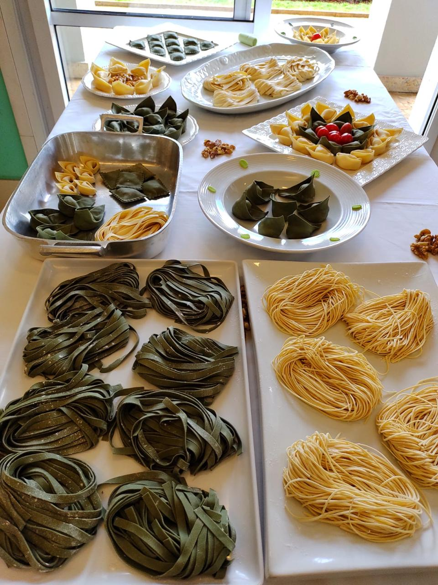

Um convite
Venha para o café da manhã.
Venha para o café da manhã.
Fique para o jantar.
Tuhu é uma casa aberta desde cedo — para quem chega em busca de um café bem tirado — e até tarde, para quem procura uma mesa tranquila e uma boa conversa. Sem pressa, sem cerimônia.
